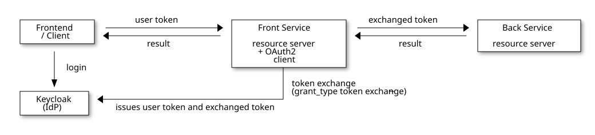
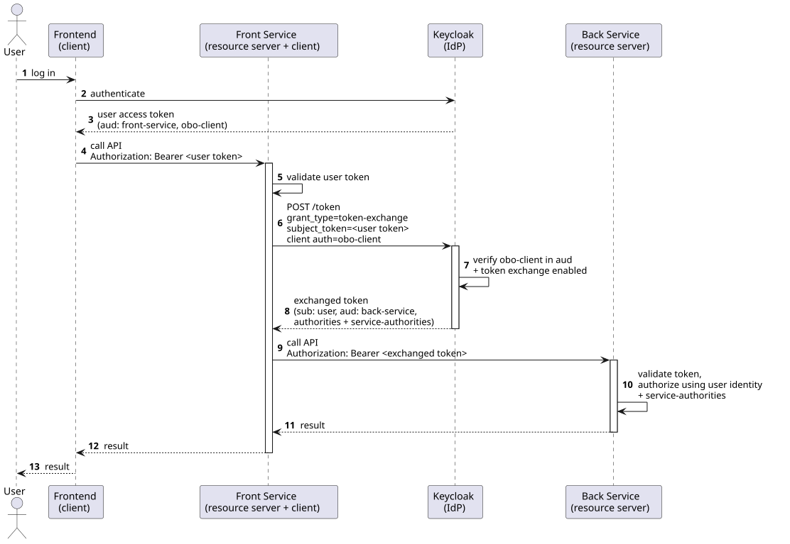

On-Behalf-Of Access via OAuth2 Token Exchange
This document describes how a service can call a downstream service in the name of the currently logged-in user using the OAuth2 token-exchange grant (RFC 8693), commonly referred to as the on-behalf-of (OBO) flow.It explains the mechanism in general terms and lists the settings required in Keycloak and in the participating Spring Boot services.
Motivation
A common architecture consists of a front service that exposes an API to human users and a back service (the Content Repository Service) that the front service calls to do part of the work.Both services are OAuth2 resource servers and validate the bearer token of the incoming request.
When the front service calls the back service, it has two options:
-
Technical-user call – the front service authenticates with its own service account (client-credentials grant). The back service then sees the technical user, not the original human user. Authorization decisions and audit entries in the back service lose the user identity.
-
On-behalf-of call – the front service exchanges the user’s token for a new token that still represents the human user but is accepted by the back service. The back service sees the original user, can apply the user’s permissions, and can additionally grant elevated permissions to the calling service for the duration of the call.
The OBO flow implements the second option. It replaces the older, non-standard impersonation feature with the standardized OAuth2 token exchange grant.
Participants

| Role | Description |
|---|---|
Identity Provider (IdP) |
Keycloak. Issues the user’s access token and performs the token exchange. Must support the Standard Token Exchange feature (Keycloak 26.2 or newer). |
Frontend / user-facing client |
The OAuth2 client through which the human user logs in (for example an OIDC login frontend or a UI client). The token it obtains is the one presented to the front service. |
Front service |
The service the user calls directly. It is both a resource server (it validates the incoming user token) and an OAuth2 client (it performs the token exchange and calls the back service). This is the service that acts on behalf of the user. |
Back service |
The downstream service that is called by the front service. It is a resource server and validates the exchanged token. |
The flow

-
The user logs in through the frontend client and receives an access token from Keycloak. This token is audience-scoped for the front service and for the OBO client (see The user-facing client).
-
The user calls the front service, passing the access token in the
Authorizationheader. -
The front service validates the token as a resource server.
-
The front service sends a token-exchange request to Keycloak’s token endpoint. It authenticates with the credentials of the OBO client and passes the user’s token as the
subject_token. -
Keycloak verifies that the OBO client is allowed to exchange the token (token exchange enabled on the client, and the OBO client present in the
audof the subject token) and issues a new access token. The new token keeps the user as its subject (sub) but is audience-scoped for the back service and carries the user’s authorities plus any service-granted authorities. -
The front service calls the back service with the exchanged token.
-
The back service validates the exchanged token, authorizes the request using the user identity and the additional
service-authorities, performs the action, and returns the result, which is propagated back to the user.
|
The token-exchange request uses these parameters (sent to plus the OBO client’s credentials for client authentication. The Spring library performs this request automatically; the parameters are listed here for reference and for troubleshooting against the Keycloak server logs. |
Keycloak configuration
The OBO flow relies on Keycloak’s Standard Token Exchange (token exchange V2), which is available from Keycloak 26.2. It does not require the legacy fine-grained admin permissions of the older token-exchange implementation.
Two clients must be configured: the OBO client used by the front service to perform the exchange, and the user-facing client whose tokens are exchanged.
The OBO client
This is the confidential client whose credentials the front service uses to perform the exchange.
| Setting | Value / requirement |
|---|---|
Client authentication |
|
Standard Token Exchange |
Enabled. In the client’s Capability config turn on Standard token exchange. |
Service accounts / Standard flow / Direct access grants |
Not required for the exchange itself and can be disabled. |
Audience mapper for the back service |
A protocol mapper of type Audience that adds the back service’s resource id to the |
Authorities mapper |
A protocol mapper that writes the user’s realm roles into the |
Service-authorities mapper (optional) |
A Hardcoded claim mapper that writes additional, service-granted authorities into the |
The user-facing client
The client through which the user logs in must produce a token that is accepted by the front service and may be exchanged by the OBO client.
| Setting | Value / requirement |
|---|---|
Audience of the front service |
An Audience mapper that adds the front service’s resource id to the |
Audience of the OBO client |
An Audience mapper that adds the OBO client to the |
Authorities mapper |
A User Realm Role mapper writing the user’s realm roles into the |
Realm roles and authorities
-
The user’s realm roles model the permissions the user holds personally. They flow through both tokens via the
authoritiesmapper. -
The service-granted authorities (the
service-authoritiesclaim on the OBO client) model permissions the calling service is allowed to use on behalf of the user. Hard-coding them on the OBO client means they are granted for every OBO call, scoped to the back service via the audience mapper. As an alternative to a hardcoded claim, the same authorities can be modeled as realm roles assigned to the OBO client and mapped into theauthoritiesclaim together with the user’s roles.
Service configuration
Both services use the EITCO Spring Security OAuth2 starters
(de.eitco.commons:cmn-spring-security5-oauth2-*). See the library README for the full reference; the settings relevant
to the OBO flow are summarized here.
Front service (resource server + client)
Use the cmn-spring-security5-oauth2-client-server starter, which makes the application both a resource server and an
OAuth2 client.
-
Configure a client registration for the OBO client using the token-exchange grant type:
spring: security: oauth2: resourceserver: jwt: issuer-uri: "https://<keycloak>/realms/<realm>" client: registration: keycloak-token-exchange: provider: keycloak client-id: "obo-client" client-secret: "<obo-client-secret>" authorization-grant-type: "urn:ietf:params:oauth:grant-type:token-exchange" provider: keycloak: issuer-uri: "https://<keycloak>/realms/<realm>" -
Decide when the exchange is performed:
-
Set
commons.security.oauth2.client.auto-impersonate: trueto exchange the user’s token automatically for every downstream call made while a human user is in the security context. -
Or leave auto-impersonation off and wrap the relevant calls in
UserImpersonation.impersonateCurrentUser()(try-with-resources) to opt in per code block.commons: security: oauth2: client: auto-impersonate: true
-
The library only exchanges the token when a human user is in the security context. For a technical user (service account) it falls back to the normal client registration, so the same code path works for both call types.
Back service (resource server)
Use the cmn-spring-security5-oauth2-server starter and point it at the same realm:
spring:
security:
oauth2:
resourceserver:
jwt:
issuer-uri: "https://<keycloak>/realms/<realm>"The back service validates the exchanged token. Two points matter for the OBO flow:
-
Audience enforcement – with
commons.security.oauth2.enforce-audience=true(the default) the back service only accepts tokens whoseaudcontains its resource id (commons.security.oauth2.resource-id, falling back tospring.application.name). This is why the OBO client needs the audience mapper for the back service. -
Authorities – the granted authorities of the resulting authentication are built from the token’s
authoritiesclaim, thescopeclaim, external user management, and theservice-authoritiesclaim. The service-granted authorities therefore become effective in the back service’s authorization checks.
Troubleshooting
| Symptom | Likely cause and fix |
|---|---|
Token exchange returns |
The OBO client is not contained in the |
Token exchange is rejected as not allowed |
Standard token exchange is not enabled on the OBO client, or the OBO client is not confidential. Enable the capability and configure client authentication. |
Back service responds |
The exchanged token does not contain the back service’s resource id in |
Back service sees a technical user instead of the human user |
No human user was in the front service’s security context when the downstream call was made, so no exchange happened.
Ensure the call runs under the user’s authentication and that auto-impersonation is enabled or
|
Operation forbidden although the user is authenticated |
The required |